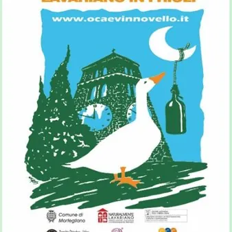

da sab 14 nov a dom 15 nov · dalle 09:00
Festa dell'Oca e del Vin Novello 2026
Ritorna a Lavariano la Festa dell'Oca e del Vin Novello 2026 giunta alla sua 29^ edizione con i piatti a base d'oca abbinati al vin novello
 Indicazioni
Indicazioni
- Costi e prenotazioni
- Costo non indicato · Prenotazione non indicata
- Programma
- Programma da verificare. Apri la fonte ufficiale per orari e possibili aggiornamenti.
- In caso di maltempo
- Nessuna indicazione specifica pubblicata.
- Note
- Acquisito automaticamente dalla fonte.
L’EVENTO
Descrizione completa
Ritorna a Lavariano la Festa dell'Oca e del Vin Novello 2026 giunta alla sua 29^ edizione con i piatti a base d'oca abbinati al vin novello
PROGRAMMA
SABATO 14 NOVEMBRE 2026
ore 09.00 - Apertura Mercato Naturalmente Lavariano, agroalimentare di qualità, con degustazione dei prodotti.
Speciale Mercatino degli Amici toscani con prodotti tipici. Gli alunni e le alunne delle Scuole Primarie di Lavariano e Mortegliano presentano i loro laboratori creativi: «L'Oca delle meraviglie »
ore 12.00 - Inaugurazione della XXIX Festa dell'Oca e del Vin Novello e stappo della prima bottiglia alla presenza delle Autorità regionali e locali.
Apertura bancarelle con piatti d'Oca, Vin Novello, pregiati Vini DOC friulani e Bollicine...
ore 15.00 - 15° Concorso gastronomico Oca e Vin Novello nel dì di San Martino, con rinomata giuria
ore 19.00 - Premiazioni del Concorso gastronomico
DOMENICA 15 NOVEMBRE 2026
Speciale Mercatino degli Amici toscani con prodotti tipici.
ore 11.00 Apertura bancarelle con piatti d'Oca, Vin Novello pregiati Vini DOC friulani e Bollicine...
ore 13.00 L'Oca in tavola: viaggio enogastronomico tra profumi e sapori del territorio .
Pranzo in sala con piatti a base d'Oca abbinati al Viin Novello a cura dell’Istituto Bonaldo Stringher di Udine in collaborazione con l' Associazione Italiana Sommelier
ore 15.00 - Visite guidate alle Aziende vinicole del territorio
ore 21.00 Estrazione della Gran Lotteria dell'Oca
Cucina a cura della "TRATTORIA DA NANDO"
IL PROGRAMMA
Programma e orari
Appuntamenti raccolti dalle fonti elencate. Dove manca un orario, non è ancora disponibile in questa scheda.
Programma pubblicato
- 09.00 - Apertura Mercato Naturalmente Lavariano,
- ore 12.00
- 15.00 - 15° Concorso gastronomico
- ore 19.00
- ore 11.00
- ore 13.00
- 15.00 - Visite guidate alle Aziende vinicole del territorio
- 21.00 Estrazione della Gran Lotteria dell'Oca
INFORMAZIONI UTILI
Prima di partire
- Controllare la fonte prima di partire.
ORGANIZZAZIONE